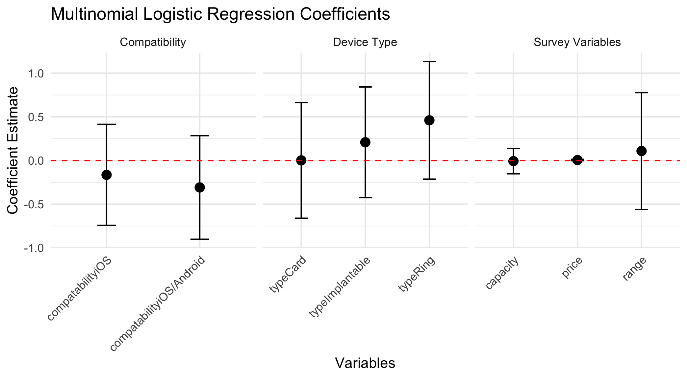
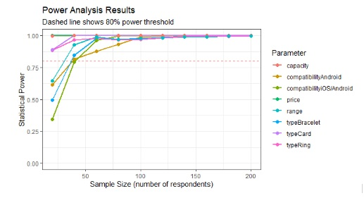
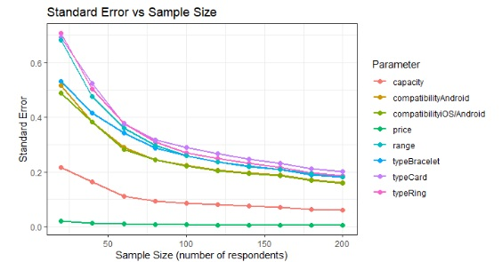
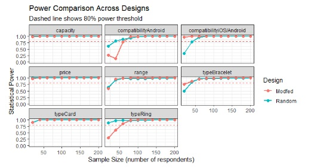
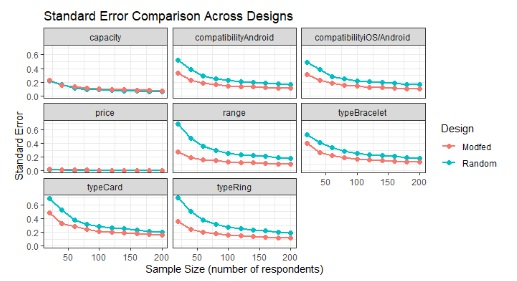

Make sure you update the settings in the YAML for your report.
Use markdown for formatting, e.g.: Bold, Italic, etc.
Here are some section headers to use:
Abstract
The pilot survey explores consumer preferences in regards to RFID devices in various form factors. The survey consists of six 3-alternative randomized conjoint choices and our multinomial logit model estimates beta values for type, price, compatibility, capacity, and range. However, no coefficients reached any meaningful significance most likely due to the sample size. We interpret these results as evidence that more observations are needed and a few wording/formatting choices likely caused attribute ambiguity. We outline concrete revisions to the survey and a power-analysis-based sample target to improve precision in the full launch.
Introduction
Radio-Frequency Identification (RFID) technologies enable short-range, contactless exchange of information between a passive tag and an active reader. This capability simplifies payments in consumer settings, building access, and digital ID storage across multiple of form factors (e.g., rings, bracelets, cards, and implants). Adoption has remained quite limited, especially for more invasive procedures such as implants due to reasons such as consumer trust.
We focus on four questions:
RQ1: What factors most influence willingness to adopt RFID devices?
RQ2: Do people show a baseline reluctance toward implants relative to non-invasive form factors?
RQ3: What kinds of benefits (e.g., convenience or flexibility) seem to offset reluctance?
RQ4: What refinements to wording, framing, or visuals are needed before a full launch?
The remainder of the report summarizes the pilot sample, key findings, and the changes we’ll make ahead of the main study.
# Pilot Data Analysis
Sample Description
Our initial survey was disseminated to peers in the classroom for question. In total our team received 23 responses, while cleaning the survey only 18 responses remained; this will be elaborated further in the data cleaning portion.
Each survey contained 6 choice questions pulled randomly from out design matrix. Thus from these 18 valid surveys, 108 choice questions were completed.
Given our team was looking to explore the RFID communications market for consumers with an emphasis on injectables a younger target audience was the goal. Looking at our survey we had an average respondent age of 23.3, a fairly young group which is exactly what we we’re aiming for. This age group is more open to new technology ideas that may seem radical to an older environment.
Data Cleaning
Data cleaning solely involved mutating the provided data cleaning folder provided by Professor Helveston. This process involves finding question completion times and creating basic filters to dwindle down the sample group (the 23->18 drop we saw earlier). These filters include answering the same for every question to completing the question too quickly. From here our cleaned data can be modeled to see if any actionable information comes from this survey.
The model of choice for this analysis is the Multinomial Logistic Regression model. This model is an extension of the classic logistic regression model where answers to questions follow two possible outcomes. Meanwhile multinomial works above this case where an answer, while discrete, may have more than two categories. For example, in our pilot survey our price category has values of 25, 50, and 100.
This model also differs from regular regression in the senses that we are trying to maximize likelihood instead of minimizing Mean Square Error as usual. Utilizing the logitR package the following co-efficients were reached for our utility function.
From this simple summary we can extract key information that points to a single conclusion. Using an alpha level of 0.05, or even 0.1 not a single parameter is deemed significant. Even though standard error for all parameters fall around 0 for each attribute our P-values tells us all of our responses are junk when making any real conclusions.

Power Analysis
We based our power analysis on the following priors:
Attribute
Level/Category
Value
Type
Implantable
Baseline
Ring
1
Bracelet
1
Card
2
Price
—
-0.1
Compatibility
iOS
Baseline
Android
-1
iOS/Android
1
Capacity
—
1
Range
—
1
Our team has concluded that our sample size should be approximately 75 respondents. This decision is derived from the following plots.

Power Analysis

Standard Error
At 50 respondents, all of the attributes are above the 80% power threshold, but several of the attributes are between 0.35 to 0.45. At n = 75, not only are all attributes high above the 80%, but all attributes are below 0.35. While we may be able to obtain more precise measurements if we increase the sample size, the rate of return decreases significantly as we increase n after n = 75.
Our team also plans to use the ‘modfed’ algorithm instead of the random algorithm. The plots below show the results of our comparison between those two diagrams.

Power Comparison

Standard Error Comparison
The majority of the plots show that the Modfed design is superior to the random design in both statistical power and standard error. There are a few exceptions in statistical power, but overall, the Modfed design will work better for our survey than the random design.
Changes to Final Survey
Based on feedback from our pilot survey, we have decided to make a few changes to enhance our final survey. The first and easiest change we had to make was replacing the implant image. We felt that the original image used for the pilot survey did not accurately convey what the implant was. The first image made the implant look larger, scarier, and it was not clear how it would be used. The new image, while not showing the implant in detail, depicts it in a hand that displays its positioning and relative size far better. Another surface-level change suggested by a peer was to add an informational page to the survey, briefly explaining RFID technology and the idea of an implant. Our changes will not just be surface-level, because as we concluded in our model analysis, none of our attributes stood out as significant. We believe that this is due to a lack of people taking our survey. We do not believe that we will be able to reach the necessary sample size required to get accurate and insightful data using our current question design. To fix this, we are going us the Modfed experimental design as mentioned in our power analysis.
Appendix
Our survey begins with a statement describing the survey:
“This survey asks about your preferences for RFID technologies used for payment and identification — such as rings, bracelets, cards, or implants.”
We continue with a question that aims to gain consent from the respondent:
“This survey is being conducted by students at The George Washington University. We will not be collecting any identifying data, such as your name or address. The survey will take about 10–15 minutes. Your participation is voluntary and you may stop at any time.”
“I am age 18 or older” “Yes” “No”
“I have read and understand the above information”, “Yes” “No”
We then attempt to gauge respondents familiarity with RFID technology:
“If you are interested in alternatives to carrying a wallet (for payments or ID) using RFID technology, please select Interested.
If you are not interested at all, select Not interested.”
“Overall, how interested are you in using RFID for payments or identification?”, “Interested” “Not interested”
Next, we describe the different attributes:
“Now that you’ve shared a bit about yourself, consider a scenario in which you can choose an RFID technology from a set of options with different attributes.
Price
The cost (USD) you would pay for the device.
Range
How far (in feet) a scanner can detect the RFID signal (e.g., 0.1, 0.5, or 1 ft).
Compatibility
Which phone ecosystem the device pairs with: iOS, Android, or Both.
Storage
How many digital ID tags can be stored (e.g., 1, 3, or 5 Tags).
Type / Location
We will show several form factors: - Bracelet or Ring (wearables) - Card (wallet alternative) - Implant (subdermal location such as hand, wrist, or finger)”
The next step is to introduce our survey:
“On the next pages, you’ll see three RFID options. Choose the one you most prefer.
We will now show you 6 sets of choice questions starting on the next page.”
Next, we go into the survey itself. The below image is an example of a question respondents would see:
Example Question
The next step is to gather a little more information regarding the respondents:
“We’re almost done! We’d just like to ask just a few more questions about you which we will only use for analyzing our survey data.”
“(1) In what year were you born?”
“(2) What is your current gender identity?”
“Please let us know if you have any other thoughts or feedback on this survey.
Your feedback will help us make future improvements :)”
Finally, respondents are directed to the end page where they receive their completion code:
“The survey is finished. Thank you for your feedback!
 # Pilot Data Analysis
# Pilot Data Analysis